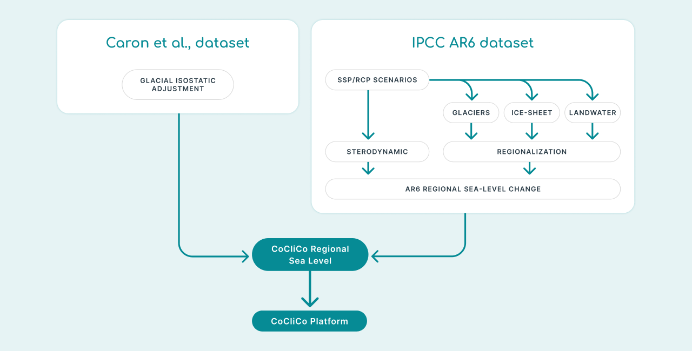
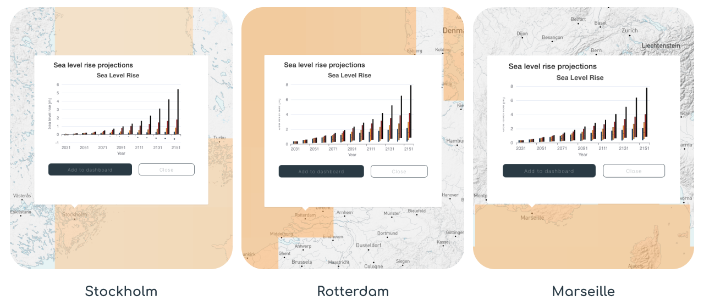
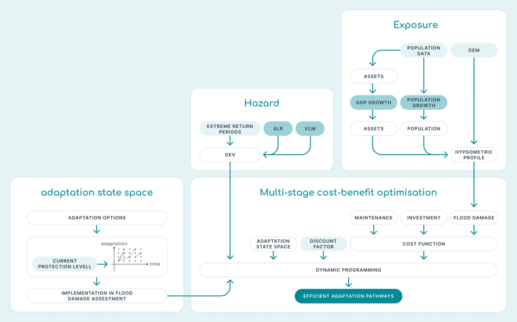

Key Layers, Sources, and How to Interpret Them
Data Layers in the CoCliCo platform
In the CoCliCo Platform, each data layer is the result of modeling and transforming various datasets from the STAC (SpatioTemporal Asset Catalog) to generate the final geospatial data layers. The platform is organized into five main categories: Sea Levels, Natural Hazards, Exposure and Vulnerability, Risk and Adaptation, and Background Layers, each containing its own specific data layers. Keep reading to discover which datasets are used to create the data layers in the platform.
User Stories
User Stories are ready-made map datasets in the CoCliCo platform. They combine different types of important information to show scenarios for coastal risk resulting from sea-level rise, floods and / or erosion. These layers make complex analyses easier and help users to quickly get a sense of coastal risks.
User research showed that policymakers need clear, actionable data for flood directives, while urban planners want tools to assess local risks, and where infrastructure managers focus on long-term resilience planning. These insights helped shape User Stories to provide accessible, scenario-driven visualizations for diverse decision-making needs. There are six User Stories:
- Sea level rise projections
- Inundation distribution during a flood event
- Building Exposure
- Projections of Exposed People
- Damage costs of exposed infrastructures
- Adaptation based on cost-benefit analysis
Sea Levels
Data Layers & User Stories
The CoCliCo Platform provides access to sea-level rise (SLR) projections based on the latest scientific assessments from the Intergovernmental Panel on Climate Change (IPCC) Sixth Assessment Report (AR6), essential for understanding future changes and planning coastal adaptation.
Use the Sea Level Rise Projections User Story for detailed insights into how sea levels may change under different climate scenarios. With projections ranging from 0.3 to 1 meter by 2100—and continuing to rise—this data is crucial for assessing coastal flood risks, infrastructure planning, and long-term adaptation.
Unlike global estimates, these regional projections account for local factors like ocean circulation, ice melt, and land shifts, offering more precise insights for specific locations. This layer is a key foundation for flood models and supports all other User Stories in the platform.
"I need to see mean sea-level rise information now and in the future for different climate change scenarios, so I can do a broad-scale preliminary evaluation of risks.”
Data Sources
CoCliCo's regional sea-level projections are based on the IPCC AR6 dataset, incorporating all sea-level components except vertical land motions, which are corrected using GIA model outputs for improved regional accuracy.
- IPCC AR6 (Fox-Kemper et al., 2021)
- AR6 dataset is described and displayed at Sea Level Projection Tool – NASA Sea Level Change Portal and is publicly distributed at IPCC AR6 Sea Level Projections (Garner et al., 2022).
- Glacial Isostatic Adjustment (GIA) model outputs (Caron et al., 2018)

Methods
CoCliCo regional mean sea-level projections are constructed by combining the IPCC AR6 sea-level change dataset and the GIA model outputs of Caron et al. (2018), and propagating uncertainty following a Monte Carlo approach. The regional sea-level changes therefore include the changes in ocean density and circulation, the changes due to continental glaciers and ice-sheet mass loss and their respective regional spatial distribution, changes in land water and groundwater, and the post-glacial rebound.
Climate Scenarios
The platform offers sea-level rise projections for three Shared Socioeconomic Pathways (SSPs) and a high-end scenario:
-
SSP1-2.6
A low-emission scenario where global temperatures are limited to 1.5°C above pre-industrial levels, reflecting a sustainable future with rapid decarbonization. -
SSP2-4.5
A medium-emission scenario where global temperatures rise moderately, reflecting a future with some efforts to mitigate climate change. -
SSP5-8.5
A high-emission scenario where global temperatures rise significantly, reflecting a future with continued high greenhouse gas emissions and limited mitigation efforts. -
High-End
Represents more extreme but plausible outcomes of sea-level rise, useful for risk assessment and worst-case planning.
Ensembles
The projections are provided in three ensemble ranges to reflect the uncertainty in future sea-level rise:
-
MSL_h: Represents the upper range of projected sea-level rise, reflecting higher uncertainty and more extreme outcomes.
-
MSL_m: Represents the median projection of sea-level rise, based on the central estimates from the IPCC AR6.
-
MSL_l: Represents the lower range of projected sea-level rise, reflecting more optimistic outcomes with lower uncertainty.
Time Horizon
The projections are available for decadal time steps from 2030 to 2150, allowing users to explore how sea levels may change over the coming decades and into the next century.
Regional and Global Coverage
The projections are provided at both regional and global scales:
- Regional Scale: Users can explore how sea-level rise may vary across different parts of the world, accounting for local factors such as land subsidence, ocean currents, and glacial isostatic adjustment.
- Global Scale: The platform also provides global mean sea-level (GMSL) projections, which represent the average rise in sea levels worldwide.
Baseline Period
All projections are relative to a 1995–2014 baseline period, consistent with the IPCC AR6 methodology. This baseline provides a common reference point for comparing future sea-level rise scenarios.
How to Use the Sea Level Rise Projections
- Scenario Selection: Choose from the available scenarios (SSP1-2.6, SSP2-4.5, SSP5-8.5, and high-end) to explore different future pathways of sea-level rise.
- Ensemble Selection: Select between the high (MSL_h), median (MSL_m), and low (MSL_l) ensembles to understand the range of possible outcomes.
- Time Horizon: View projections for specific decades (e.g., 2030, 2040, 2050, etc.) to assess how sea levels may change over time.
- Specific Analysis: Zoom in on specific regions to see how sea-level rise may impact local coastlines.
Model Outputs

Why Are These Projections Important?
- Coastal Risk Assessment: The sea-level rise projections are critical for assessing the risks of coastal flooding, erosion, and other hazards. They help identify areas that may be most vulnerable to future sea-level rise.
- Adaptation Planning: By understanding how sea levels may change in the future, coastal planners and policymakers can develop strategies to protect communities, infrastructure, and ecosystems.
- Scientific Consistency: The projections are based on the latest IPCC AR6 report, ensuring that users have access to the most reliable and up-to-date scientific information.
Example of use
"Using the Sea Level Rise projections User Stories, city planners identified their neighbourhoods as having a higher risk of permanent flooding related to sea level rise by 2050 under high-emission scenarios high-emission scenarios compared to other neighbourhoods in the country. This analysis informed their decisions to prioritize green infrastructure development in those areas, reducing potential damage costs by 30%."
Further Analysis
Beside GIA, coastal regions in Europe can experience significant vertical land motion (VLM) which can be strong, robust and that can be assessed locally. There is for instance well known subsidence along the Italian Adriatic, the Netherlands or even in more localized shorelines such as the Aksiou delta next to Thessaloniki in Greece. This subsidence context can strongly inflate coastal hazards locally and should therefore be accounted for. The CoCliCo project explored local VLMs using the land vertical velocity estimates from the Copernicus European Ground Motion Service (EGMS) derived over the period 2016-2021 (Thiéblemont et al., 2024). While these estimates are not implemented in the regional sea-level projections of CoCliCo, they have been considered for the coastal hazard assessment and can be explored as an exploratory tool using the Workbench.
The Extreme Surge Level (SSL) data layer provides projections of storm surge levels along the European coastline under different climate scenarios. Storm surges are a critical component of coastal hazards, and understanding how they may evolve in the future is essential for coastal risk assessment and adaptation planning. This dataset is part of the LISCOAST project and is based on hydrodynamic modeling and climate projections.
"Example"
Data Sources
Methods
The SSL projections are based on:
-
Hydrodynamic Modeling
The Delft3D-Flow model was used to simulate storm surge dynamics.
-
Climate Forcing
The model was forced by surface wind and atmospheric pressure fields from an 8-member climate model ensemble.
-
Validation
The model was validated using data from 110 tidal gauge stations across Europe, showing good predictive skill (RMSE: 0.06 m to 0.29 m).
-
Extreme Value Analysis
The Peak-Over-Threshold (POT) method was applied to estimate SSL values for different return periods.
Climate Scenarios
The dataset includes projections for three climate scenarios:
-
Historical
Represents the baseline period (1970–2000) for validating the model. -
RCP4.5
A medium-emission scenario where global temperatures rise moderately. -
RCP8.5
A high-emission scenario where global temperatures rise significantly.
Return Periods
The dataset provides SSL estimates for eight return periods, which represent the frequency of extreme events:
| Return Period (Years) | Description |
|---|---|
| 5 | Events expected to occur once every 5 years. |
| 10 | Events expected to occur once every 10 years. |
| 20 | Events expected to occur once every 20 years. |
| 50 | Events expected to occur once every 50 years. |
| 100 | Events expected to occur once every 100 years. |
| 200 | Events expected to occur once every 200 years. |
| 500 | Events expected to occur once every 500 years. |
| 1000 | Events expected to occur once every 1000 years. |
Geographic Coverage The dataset covers the European coastline, with detailed projections for:
-
Northern Europe
Areas north of 50°N, where significant increases in SSL are projected, especially under RCP8.5. -
Southern Europe
Areas south of 50°N, where minimal changes or small decreases in SSL are projected, except under RCP8.5 towards the end of the century.
How to Use the Extreme Surge Level Data
- Scenario Selection: Choose from the available scenarios (Historical, RCP4.5, RCP8.5) to explore how storm surge levels may change under different climate futures.
- Return Period Selection: Select a return period (e.g., 5, 10, 20, 50, 100, 200, 500, or 1000 years) to assess the frequency and magnitude of extreme storm surge events.
- Geographic Analysis: Zoom in on specific regions (e.g., Northern or Southern Europe) to see how storm surge levels may vary across the coastline.
Model Outputs
Why Is This Data Important?
- Coastal Risk Assessment: The SSL data is critical for assessing the risks of coastal flooding and erosion, especially in areas prone to extreme storm surges.
- Adaptation Planning: By understanding how storm surge levels may change in the future, coastal planners and policymakers can develop strategies to protect communities, infrastructure, and ecosystems.
- Combined Effects: The dataset highlights the combined effects of relative sea-level rise (RSLR) and storm surge levels, which can significantly increase coastal hazards, particularly under high-emission scenarios like RCP8.5.
Example of use
"Example"
Further Analysis
The Extreme Sea Level (ESL) data layer provides projections of total water levels (TWL) along European coastlines under climate change. This dataset combines mean sea level rise, tides, storm surges, and wave heights to assess future coastal flood risks. It is part of the LISCOAST project and is critical for understanding how climate change will impact coastal hazards.
"Example"
Data Sources
Methods
Climate Scenarios The dataset includes projections for two climate scenarios:
-
RCP4.5
A medium-emission scenario where global temperatures rise moderately. -
RCP8.5
A high-emission scenario where global temperatures rise significantly.
Return Periods The dataset estimates extreme sea levels for eight return periods, representing the frequency of extreme events:
| Return Period (Years) | Description |
|---|---|
| 5 | Events expected once every 5 years. |
| 10 | Events expected once every 10 years. |
| 20 | Events expected once every 20 years. |
| 50 | Events expected once every 50 years. |
| 100 | Events expected once every 100 years. |
| 200 | Events expected once every 200 years. |
| 500 | Events expected once every 500 years. |
| 1000 | Events expected once every 1000 years. |
Components of Extreme Sea Levels
-
Total Water Level (TWL)
Combines mean sea level (MSL), tides, storm surges, and wave setup. -
Episodic Extreme Water Level (EEWL)
Includes extreme storm surge levels and wave heights during episodic events (e.g., storms).
Geographic Coverage The dataset covers Europe’s coastline, with regional projections highlighting:
- North Sea: Highest projected increase in ESLs (up to 1 m under RCP8.5 by 2100).
- Baltic Sea & UK/Ireland Atlantic Coasts: Significant increases in ESLs.
- Southern Europe: Stable or decreasing extremes, except for Portugal and the Gulf of Cadiz.
How to Use the Extreme Sea Level Data
- Scenario Selection: Choose between RCP4.5 (moderate warming) and RCP8.5 (high warming) to explore future risks.
- Return Period Selection: Select a return period (e.g., 100-year event) to assess the magnitude and frequency of extreme sea levels.
- Regional Analysis: Focus on specific regions (e.g., North Sea, Southern Europe) to understand local impacts.
Model Outputs
Why Is This Data Important?
- Coastal Flood Risk: ESL projections help identify areas most vulnerable to flooding, particularly under high-emission scenarios.
- Adaptation Planning: Supports decision-making for coastal defenses, land-use planning, and emergency preparedness.
- Combined Effects: Highlights how relative sea level rise (RSLR), storm surges, and waves interact to amplify risks.
Example of use
"Example"
Further Analysis
Natural Hazards
Data Layers & User Stories
The Inundation Distribution During Flood Events data layer provides flood extent projections under various scenarios, including different coastal defense levels, return periods, and future climate conditions. These projections are essential for understanding the impact of extreme coastal flooding and aiding in risk assessment and adaptation planning.
"Example"
Data Sources
Methods
This dataset is generated using advanced flood modeling techniques:
-
Two-dimensional inundation models
More realistic than simple bathtub methods, as they account for flood defense failure and wave propagation.
-
2D hydraulic storage-cell models
Used at the pan-European scale, incorporating projected total water levels, land use-based roughness, and multiple flood sources.
-
Bathtub method
Applied as an initial assessment tool, though it may overestimate flood extent.
-
Hydrodynamic modeling
Acknowledged for its accuracy but not widely applied due to computational constraints.
Climate Scenarios
The dataset includes projections for three climate scenarios:
-
SSP1-2.6
A low-emission scenario where global temperatures are limited to 1.5°C above pre-industrial levels, reflecting a sustainable future with rapid decarbonization. -
SSP2-4.5
A medium-emission scenario where global temperatures rise moderately, reflecting a future with some efforts to mitigate climate change. -
SSP5-8.5
A high-emission scenario where global temperatures rise significantly, reflecting a future with continued high greenhouse gas emissions and limited mitigation efforts.
Consideration of Defenses and Scenarios
- Coastal defenses: Both natural (e.g., dunes) and artificial (e.g., dikes) structures are considered.
- Failure mechanisms: Flood maps account for defense failures due to overtopping, overflow, and breaching.
Protection Levels:
-
High Defended
Areas with robust, well-maintained protection. -
Low Defended
Areas with some protection but vulnerable to failure. -
Undefended
Areas without significant coastal protection.
Flood Drivers:
-
High tides
-
Frequent storms
-
Extreme “perfect storm” scenario
-
Erosion
The compounded impact of coastal erosion and flooding is considered.
How to Use the Inundation Distribution During Flood Events Data
- Defense level: Choose between high, low, or no protection.
- Return Period Selection: Select a return period (e.g., 100-year event) to assess the magnitude and frequency of the flood event.
- Scenario Selection: Choose between the different climate projections under different Shared Socioeconomic Pathways (SSP126, SSP245, SSP585, High-End).
- Timeframe selection: Available for 2010, 2030, 2050, 2100, and 2150.
Model Outputs
Why Is This Data Important?
The Inundation Distribution During Flood Events dataset is crucial for coastal risk assessment and adaptation planning by:
- Supporting flood risk management: Helps identify vulnerable areas and evaluate different protection strategies.
- Informing coastal adaptation: Aids in designing climate-resilient infrastructure and nature-based solutions.
- Enhancing emergency preparedness: Allows authorities to plan for extreme events and mitigate disaster impacts.
- Improving scientific research: Provides a consistent, large-scale dataset for studying climate change effects on coastal flooding.
- Assisting policymakers: Supports data-driven decision-making for long-term coastal management.
Example of use
"Example"
Further Analysis
The Shoreline Change dataset provides projections of global shoreline evolution under climate change. This assessment considers the combined effects of:
- Ambient change: Historical shoreline trends.
- Sea level rise (SLR): Based on RCP4.5 and RCP8.5 climate scenarios.
- Storm-driven erosion: Instantaneous shoreline changes due to extreme events.
"Example"
Data Sources
Methods
Climate Scenarios
The dataset includes projections for two climate scenarios
-
RCP4.5
A medium-emission scenario where global temperatures rise moderately. -
RCP8.5
A high-emission scenario where global temperatures rise significantly.
Ensembles
Data is computed for seven statistical ensembles (1st, 5th, 17th, 50th, 83rd, 95th, and 99th percentiles) at two key timeframes: 2050 and 2100. The projections stem from the LISCOAST project, a comprehensive study of coastal dynamics under climate change.
How to Use the Shoreline Change Data
Users can filter the dataset based on:
- Scenario Selection: Choose from the available scenarios (RCP4.5, RCP8.5) to explore how shorelines may change under different climate futures.
- Statistical ensembles: Choose between different confidence levels (e.g., 1st percentile for extreme retreat, 99th for conservative estimates).
- Timeframes: Select a future projections between 2050 and 2100.
Model Outputs
Why Is This Data Important?
The Shoreline Change dataset is critical for:
- Coastal risk management: Identifying areas vulnerable to erosion and planning protective measures.
- Infrastructure planning: Supporting long-term decision-making for sustainable coastal development.
- Climate adaptation: Evaluating potential impacts of sea level rise and storm events.
- Scientific research: Providing a robust dataset for studying coastal responses to climate change.
Example of use
"Example"
Further Analysis
Exposure and Vulnerability
Data Layers & User Stories
The Building Exposure User Story in the CoCliCo platform maps the risk of coastal flooding to buildings in low-lying coastal areas under different climate scenarios. As sea levels rise and extreme weather events become more frequent, understanding which areas are most at risk is crucial for resilience planning and adaptation.
This tool combines building data from OpenStreetMap with advanced flood maps, providing policymakers, urban planners, and coastal managers with detailed insights on flood vulnerability. By highlighting localized risks, it supports evidence-based decision-making for long-term coastal adaptation.
"I need to see building exposure now and in the future for different climate change scenarios, so I can better understand the potential risk hotspots."
Data Sources
The building exposure is based on the latest building information extracted from OpenStreetMap. OpenStreetMap provides a consistent data layer across Europe, with standardized information on building type and location. The building footprints extracted from OpenStreetMap are combined with CoCliCo’s state-of-the-art inundation maps.
Methods
How to Use the Building Exposure data
Model Outputs
Why Are This Data Important?
Example of use
"Using the Building Exposure User Stories, city planners identified their neighbourhoods as having a higher risk of flooding related to sea level rise by 2050 under high-emission scenarios high-emission scenarios compared to other neighbourhoods in the country"
Limitations
While OpenStreetMap provides a consistent coverage across Europe, it does not provide a complete coverage. Across Europe, the average completeness is estimated to be roughly 70%. Some countries have integrated national-scale databases within OpenStreetMap (e.g. The Netherlands, France & Italy) and are therefore almost complete, other countries have very active user communities that aim for a near-complete data (e.g., Germany). However, some countries still experience several gaps (e.g., Ireland and the United Kingdom). Given the potential of missed buildings, we advise local authorities to careful check, and if possible to re-run the analysis with local information before any decisions are made.
Further Analysis
The building exposure layer is the starting point for the coastal risk assessment. Moreover, within the Workbench one can extract exposure data for their area of preference, allowing to better understand how sea-level rise will increase future coastal flood risk within any coastal area across Europe.
The Projections of Exposed People User Story in the CoCliCo platform shows how many people may be affected by coastal flooding in the future. It combines high-resolution flood and population data to provide clear insights under different climate and socioeconomic scenarios.
Since future population growth and movement are uncertain, this tool considers multiple scenarios to improve flood risk assessments. By mapping projected exposure to coastal flooding, it helps policymakers, urban planners, and resilience experts make informed decisions for adaptation and risk reduction.
"I need information of the development of exposed population in the future for different combinations of climate and socioeconomic scenarios on a regional to national scale, so I can preliminary assess exposure to coastal flooding."
Data Sources
CoCliCo's population projections use IIASA data, downscaled with historical trends and spatial factors like roads, urban areas, and coastline proximity. Areas unsuitable for development, such as steep slopes, water-covered regions, and protected areas, are excluded. These projections are combined with CoCliCo flood data to assess population exposure to coastal flooding.
- Based on national population and urbanization projections from IIASA
- Downscaled and spatially distributed using historic population data (GHS-POP)
Projections account for key geographic and infrastructural influences. Distance to:
- Roads (OSM data)
- Urban areas (defined by population density, Degree of Urbanization method)
- Coastline (MERIT DEM coastal mask)
- Urban centers (travel time model by Weiss et al., 2018)
Excluded from future population growth
- High elevation or steep slopes (MERIT DEM)
- Permanently flooded areas (Corine Land Cover)
- Protected areas (World Database on Protected Areas)
{kind=link}
Methods
CoCliCo’s population projections are created by using a model (Reimann et al. (2021)) that helps distribute updated national population data from IIASA (2010–2100) in 10-year intervals. The data is broken down at a 1 km resolution for EU countries and the UK, for different Shared Socioeconomic Pathways (SSPs).
The model works by first calculating the "potential" or attractiveness of each area (or grid cell). It then distributes population changes over time based on this potential. The "potential" of an area is influenced by factors like how close it is to nearby areas, population density, and distance from the coastline. The model also considers past patterns of people moving between coastal/inland and urban/rural areas, adjusting for two time periods. In addition, urbanization projections are used to account for the different ways urban and rural areas develop over time in each SSP.
These population projections are combined with flood projections based on the integrated climate and socioeconomic scenarios to assess how many people are exposed to coastal flooding. The population and flood projections are aligned to ensure they match in both projection and resolution, allowing for accurate calculation of exposed populations at the Local Administrative Units (LAUs) level in coastal areas. These results are then summarized at smaller spatial levels.
How to Use the Exposed People data
Model Outputs
Why Are This Data Important?
Example of use
"Using the exposed population projections User Story, local authorities identified a concentration of population exposure in a specific area by 2050 under a high sea level scenario and low defence level. This analysis initiated a systematic and targeted adaptation planning process in this area, focusing on enhancing defences to eliminate the population exposure."
Limitations
Limitations of the population projections:
- Population Decline: In areas with population decline, the model treats cell potential differently. In urban areas, higher cell potential is linked to population loss due to suburbanization. In rural areas, lower cell potential is associated with higher population loss. This is a general assumption and might not apply to all EU regions.
- Urban and Rural Definitions: Urban and rural areas are redefined after each timestep based on urbanization share. However, this measure only reflects the fraction of the population living in urban areas and doesn’t capture the complex structure of urban regions.
Limitations of the exposed population:
- Data Alignment: To combine flood and population projections, both need to have the same resolution and projection. We adjust the population data to match the flood projections, but this can affect population counts.
- Coastline Differences: The population and flood projections use different coastlines, so some people living near the coast might not be considered at risk, even if they are on the ocean side of the coastline.
Further Analysis
To account for the full range of uncertainty in population development and its impact on coastal flooding, it’s useful to explore other socioeconomic scenarios beyond the integrated ones. While these additional estimates aren’t included directly in the platform, they can be explored in the Workbench by combining various climate and socioeconomic scenarios at different spatial scales.
The Damage Costs of Exposed Infrastructures User Story in the CoCliCo allows a quantitative assessment of damages caused by flooding under different climate change scenarios and related sea-sevel rise. Although most coastal infrastructures and assets are protected from flooding today, flood damages are expected to drastically grow with rising sea levels due to increasing flood extent and flood depth. This results in increased damages costs to coastal infrastructures. Assessing these costs is needed to tailor adaptation measures and inform decision-making at the national, regional but also local scale. The Damage Costs of Exposed Infrastructures User Story relies on the most up-to-date (i) regional sea-level projections, (ii) pan-European flood hazard assessment and (iii) current infrastructures inventory to provide coastal flood damage costs and their evolution at the scale of Local Administrative Units (LAUs); i.e. city scale.
"I need to quantify damage costs of infrastructures exposed to flooding and assess how it evolves under different climate change scenarios"
Data Sources
Methods
How to Use the Data
Model Outputs
Why Is This Data Important?
Example of use
Limitations
Further Analysis
Risk and Adaptation
Data Layers & User Stories
The Adaptation based on Cost-Benefit Analysis User Story in the CoCliCo platform helps identify the most cost-effective ways to manage coastal flood risks under different climate scenarios. It evaluates three key adaptation strategies:
- Protection – Building coastal defences like seawalls.
- Retreat – Relocating people and assets away from flood zones.
- Accommodation – Flood-proofing buildings to withstand extreme events.
The platform provides country-level insights on the best mix of these strategies, with more detailed local assessments available through the workbench. This helps policymakers and planners make informed, cost-effective adaptation decisions.
"I want to see economically optimal coastal adaptation options both today and, in the future, as well as the expected investments in coastal adaptation and the potential costs of flood damages"
Data Sources
The data flow of the cost-benefit model can be seen in this workflow chart. The output of the model (efficient adaptation pathways in the middle of the Figure) then feed onto the CoCliCo platform. Several parts or even components of this detailed Figure can be excluded to simplify it, e.g. dynamic programming, implementation of adaptation options, etc. The SSP/RCP scenarios inform the sea level rise (SLR) and vertical land motion (VLM) data.

Methods
The cost-benefit optimisation integrates several components:
- A hazard component to model extreme sea level
- An exposure component to assess population and assets at risk
- A vulnerability component to assess the susceptibility of assets to hazards
- An adaptation state space to outline potential adaptation pathways
- Cost functions to estimate the costs associated with adaptation actions
The multi-stage cost-benefit optimisation is conducted for each of the 41,327 coastal floodplains individually. We consider a time horizon from 2020 to 2150 with 10-year time steps, a discount rate of 3% and three greenhouse gas emission scenarios: low emissions (SSP1-2.6), high emissions (SSP2-4.5) and very high emissions (SSP5-8.5).
Climate Scenario
The dataset includes projections for three climate scenarios:
-
SSP1-2.6
A low-emission scenario where global temperatures are limited to 1.5°C above pre-industrial levels, reflecting a sustainable future with rapid decarbonization. -
SSP2-4.5
A medium-emission scenario where global temperatures rise moderately, reflecting a future with some efforts to mitigate climate change. -
SSP5-8.5
A high-emission scenario where global temperatures rise significantly, reflecting a future with continued high greenhouse gas emissions and limited mitigation efforts.
Projections
The dataset includes projections up to the years 2050, 2100, and 2150, offering key metrics to inform decision-making for coastal resilience.
Adaptation Strategy
- Protection
Raising coastal defenses. - Retreat
Managed withdrawal from vulnerable areas. - Accommodation
Implementing flood-proofing measures. - Protection & Retreat
A combined strategy where both approaches are efficient. - No Adaptation
Areas where adaptation measures are deemed inefficient.
The analysis accounts for adaptation costs, residual flood damages, and the most cost-efficient adaptation strategies for each floodplain.
How to Use the Data
- Scenario Selection: Choose from the available scenarios ( RCP4.5, RCP8.5) to explore how Cost-Benefit Analysis may change under different climate futures.
- Adaptation Strategy: Select an adaptation strategy between Protection, Retreat, Accommodation, Protection & Retreat adn No Adaptation
- Projection: Choose between 2050, 2100, or 2150, depending on the timeframe for the adaptation strategy.
Model Outputs
-
For each coastal floodplain, the model determines the economically optimal adaptation pathway, which is a sequence of adaptation options over time. These adaptation pathways can be explored through the workbench.
-
The web viewer illustrates the proportion of the coastline where each adaptation option is economically optimal by 2150 for each country, based on the economically optimal coastal adaptation pathways for all 41,327 floodplains.
Why Is This Data Important?
This dataset is crucial for guiding cost-effective and sustainable coastal adaptation strategies under different climate change and socioeconomic scenarios. It helps:
- Coastal decision-makers initiate proactive adaptation planning.
- Global institutions estimate future adaptation costs at regional and national scales.
- Researchers and policymakers assess the effectiveness of adaptation pathways over time.
Example of use
"National policymakers identified that significant funding would be required to address coastal flood risks in various regions. They allocated funding for coastal adaptation, encouraging local authorities to conduct their own research. This approach allowed local governments to assess specific risks and develop tailored solutions, ensuring more effective, region-specific adaptation strategies."
Limitations
This cost-benefit model uses broad data to manage computational limits, which means it doesn't include detailed information about properties, land use, or infrastructure. As a result, the model may be less accurate for specific floodplains. For example, it might suggest retreat as the best adaptation option for an area with a nuclear power plant, but this could present major challenges that the model doesn’t account for.
The model also only considers the median sea-level rise (SLR), leaving out high-end SLR scenarios. A sensitivity analysis showed that uncertainties in factors like the discount rate, protection and retreat costs, and protection levels have a bigger impact on the choice of adaptation options, the timing of actions, and total costs than the climate change scenarios themselves.
Further Analysis
Technical users can use the Workbench to perform detailed, localized analyses by adjusting variables like flood risks, cost factors, and adaptation options. This allows for tailored assessments of the most cost-effective strategies and the timing of actions at the local scale.
Users can explore different sea-level rise scenarios, test adaptation measures, and incorporate local data such as infrastructure details to refine their analysis. The Workbench enables deeper insights, helping inform more precise local adaptation strategies.
Copyright © 2025 CoCliCo Services